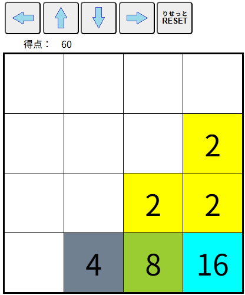

| 【2048パズル】 |
|
プレーヤーは上下左右のいずれかの方向を選び、タイルを一斉に動かします。 同じ数字のタイルがぶつかると、２つのタイルがくっついて２倍の数字のタイル１枚になります。 その時、新しくできたタイルの数字が獲得得点になります。  ・同じ数字が３枚以上が並んでいる場合は、移動方向の先のものから優先的にくっつきます。 ・くっついてできたタイルは、そのターンにはそれ以上くっつきません。 ・１列に４枚同じ数字が並んでる場合は、２倍タイルが２枚できます。 ・移動が終わると空いてるマスのいずれかに新しいパネルが１枚出現します。 ・どの方向も選択できなくなったら終了です。 ・[RESET]ボタンをクリック（タッチ）すると最初からやり直す事ができます。 |